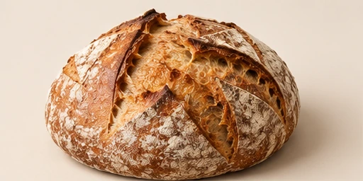
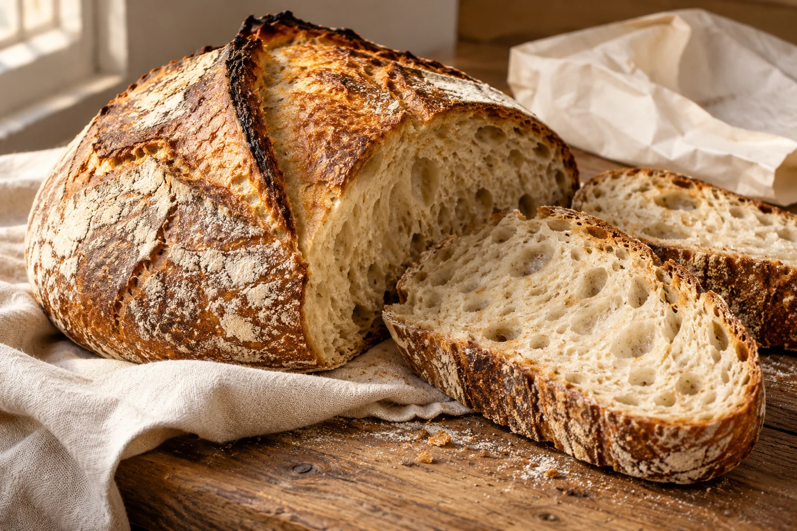
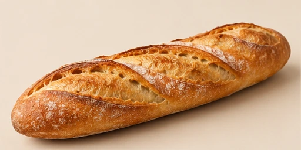
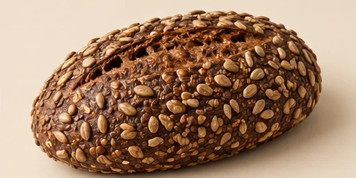
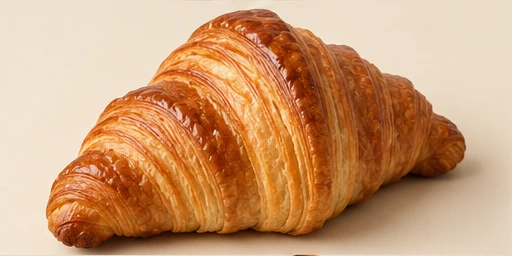
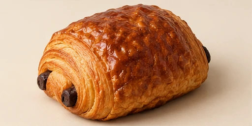
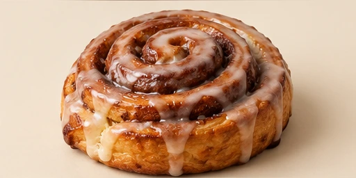
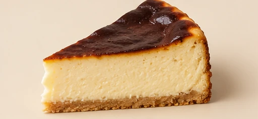
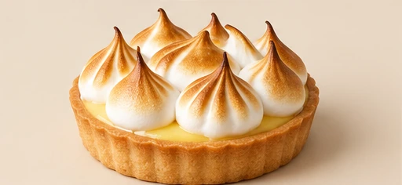
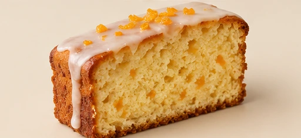

Hogaza de la casa
750 g 5,20 €
Detalles Ocultar detalles de Hogaza de la casa
Corteza crujiente, miga abierta y el sabor de una fermentación pausada.
Consulta ingredientes y alérgenos en el mostrador.
Tu panadería de barrio
Pan de masa madre, bollería recién horneada y tartas hechas en nuestro obrador.

Masa madre · Manos al trabajo · Horno propio
01 / El mostrador
Para llevar a casa, compartir o darte un pequeño capricho. Así es nuestro mostrador.
Mostrando 9 productos

750 g 5,20 €
Corteza crujiente, miga abierta y el sabor de una fermentación pausada.
Consulta ingredientes y alérgenos en el mostrador.

250 g 1,80 €
Dorada por fuera, ligera por dentro. La compañera de todas las comidas.
Consulta ingredientes y alérgenos en el mostrador.

600 g 5,80 €
Miga densa y aromática, con semillas de girasol y lino.
Consulta ingredientes y alérgenos en el mostrador.

Unidad 2,60 €
Capas finas, puntas crujientes y un interior ligero.
Consulta ingredientes y alérgenos en el mostrador.

Unidad 2,90 €
Hojaldre de mantequilla con dos barras de chocolate negro.
Consulta ingredientes y alérgenos en el mostrador.

Unidad 3,20 €
Masa suave, espiral de canela y un glaseado ligero.
Consulta ingredientes y alérgenos en el mostrador.

Porción 4,50 €
Centro cremoso, superficie tostada y una base fina de galleta.
Consulta ingredientes y alérgenos en el mostrador.

Individual 4,20 €
Crema de limón, base crujiente y merengue tostado.
Consulta ingredientes y alérgenos en el mostrador.

Porción 3,40 €
Miga tierna, ralladura de naranja y una cobertura ligera.
Consulta ingredientes y alérgenos en el mostrador.
Elaboramos en pequeñas hornadas. La selección puede variar a lo largo del día. Consulta en el mostrador los ingredientes y alérgenos de cada producto.
02 / De temporada
Tres especialidades para los días que empiezan a pedir algo calentito.
03 / Nuestro obrador

MIGA nace con una idea sencilla: recuperar el pan de cada día como un pequeño ritual del barrio. En nuestro obrador conviven la masa madre, la bollería recién hecha y las tartas para celebrar juntos.
Alimentamos la masa madre, preparamos los ingredientes y damos forma a cada pieza. Después dejamos que el tiempo y el horno hagan su parte.
Harina, agua y masa madre.
El reposo desarrolla el sabor.
Cada hornada tiene su ritmo.
04 / Tartas por encargo
Un cumpleaños, una comida en familia o un viernes que merece celebrarse.
Cuéntanos qué tarta te gustaría, para cuántas personas y qué día pasarías a recogerla. Consulta con al menos 48 horas de antelación.
Ver cómo contactarRecogida en el obrador. Sin pedidos ni pagos a través de esta web.
05 / Visítanos
Pasa a por el pan. Quédate con lo bueno.
Dirección ficticia del proyecto.
hola@miga.example
Correo de muestra, no operativo.